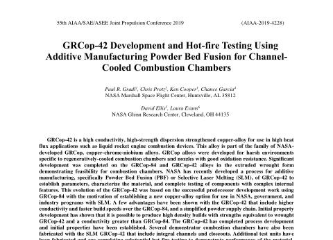
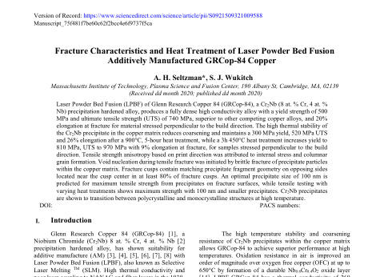
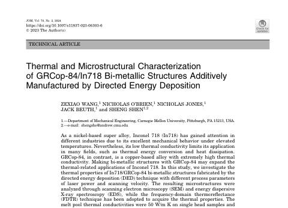
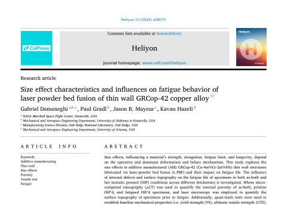
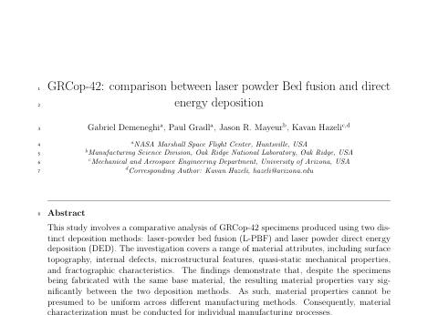
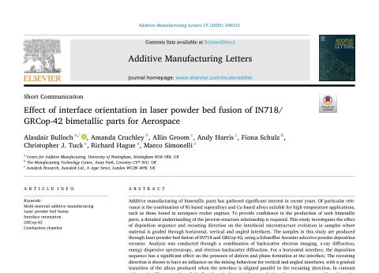
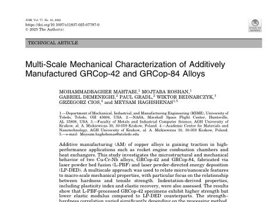
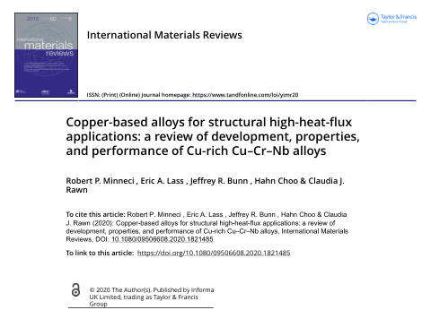
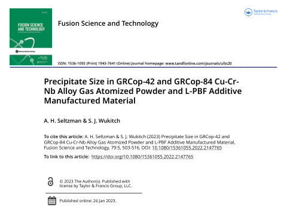
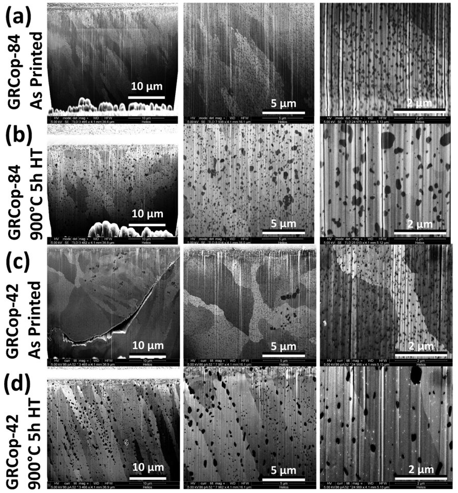

1 · I type
> /lit-fetch how do GRCop-42 and GRCop-84 compare for additively manufactured rocket combustion chambers? build a report on the papers you can capture
1 · Claude returns
It searched for papers, read 20, and wrote the report as a short article: an answer, an introduction, one question per claim, figures re-plotted from the papers' own tables, the crystal structures of the two phases, and micrographs from the papers.
Its answer, shortened: GRCop-42 has about half the Cr2Nb of GRCop-84. It gives up some room-temperature strength for 5-15 % more thermal conductivity and about 20 % faster printing. Both alloys have been fired as printed liners, but never side by side.
The 20 papers it got and read
open-access PDF Caltech library or XML full text · one line per paper on what it adds, from Claude's summary
Show or hide the 20 papers

GRCop-42 Development and Hot-fire Testing Using Additive Manufacturing Powder Bed Fusion for Channel-cooled Combustion ChambersGradl et al., 2019NASA's L-PBF GRCop-42 development, with side-by-side GRCop-84 data and 8,030 s of hot fire Additive ManufacturingBond strength measurement for additively manufactured Inconel 718-GRCop84 copper alloy bimetallic jointsOnuike, 2019full text as XMLBond strength measurement for additively manufactured Inconel 718-GRCop84 copper alloy bimetallic jointsOnuike, 2019LENS-printed GRCop-84 is the weak side of an IN718 bimetallic joint: 110 MPa shear, 162 MPa compressive yield Fusion Engineering and DesignSurface roughness and finishing techniques in selective laser melted GRCop-84 copper for an additive manufactured lower hybrid current drive launcherSeltzman, 2020full text as XMLSurface roughness and finishing techniques in selective laser melted GRCop-84 copper for an additive manufactured lower hybrid current drive launcherSeltzman, 2020As-printed SLM GRCop-84 is Ra 3.3 µm on vertical walls and 11.6 µm on top surfaces; vibratory finishing reaches 0.45 µm Fusion Engineering and DesignResolution and geometric limitations in laser powder bed fusion additively manufactured GRCop-84 structures for a lower hybrid current drive launcherSeltzman, 2021full text as XMLResolution and geometric limitations in laser powder bed fusion additively manufactured GRCop-84 structures for a lower hybrid current drive launcherSeltzman, 2021L-PBF GRCop-84 holds 10-40 µm accuracy, prints 150 µm fins, and warps below 1 mm walls
Fracture characteristics and heat treatment of laser powder bed fusion additively manufactured GRCop-84 copperSeltzman & Wukitch, 2021As-printed L-PBF GRCop-84 is far stronger than HIPed or wrought, and heat treatment moves it both ways Materials & DesignDirected energy deposition GRCop-42 copper alloy: Characterization and size effectsDemeneghi, 2022full text as XMLDirected energy deposition GRCop-42 copper alloy: Characterization and size effectsDemeneghi, 2022LP-DED GRCop-42 thin walls are fully dense after HIP but the as-built layer waviness halves vertical elongation Materials & DesignCr-based second phases in a high conductivity Cu-Cr-Nb alloy with high high-temperature strengthYang et al., 2022full text as XMLCr-based second phases in a high conductivity Cu-Cr-Nb alloy with high high-temperature strengthYang et al., 2022Cr2Nb in Cu-Cr-Nb comes in two structures: micron C15 from the melt (over 50 µm as-cast) and nanoscale C14 that only precipitates on aging at 600 °C Materials Today CommunicationsThermophysical properties of additively manufactured (AM) GRCop-42 and GRCop-84Chen et al., 2023full text as XMLThermophysical properties of additively manufactured (AM) GRCop-42 and GRCop-84Chen et al., 2023Thermal conductivity and thermal expansion of L-PBF GRCop-42 and GRCop-84 across eight vendors
Thermal and Microstructural Characterization of GRCop-84/In718 Bi-metallic Structures Additively Manufactured by Directed Energy DepositionWang, 2023Mixing In718 into a DED GRCop-84 melt pool cuts its local thermal conductivity to about 68-118 W/(m K) Journal of Materials Research and TechnologySolidification characteristics and precipitation behavior of the Cu-Cr-Nb alloysZhong et al., 2023full text as XMLSolidification characteristics and precipitation behavior of the Cu-Cr-Nb alloysZhong et al., 2023Halving Cr and Nb from Cu-8Cr-4Nb to Cu-4Cr-2Nb cuts cast Cr2Nb area fraction and shortens its growth window, but slow-cooled particles still reach 60 to 200 µm
Size effect characteristics and influences on fatigue behavior of laser powder bed fusion of thin wall GRCop-42 copper alloyDemeneghi, 2024HIP turns an L-PBF GRCop-42 thin wall from failing near 1e5 cycles to a 1e6-cycle runout, at the cost of 40% yield strength
GRCop-42: Comparison between laser powder bed fusion and laser powder direct energy depositionDemeneghi et al., 2024GRCop-42 thin walls by L-PBF vs laser-powder DED: same alloy, different properties Journal of Materials Research and TechnologyThe role of the post-heat treatment on the Cr-based precipitates and related room temperature mechanical properties of the sintered Nb-lean Cu-Cr-Nb alloyPan et al., 2024full text as XMLThe role of the post-heat treatment on the Cr-based precipitates and related room temperature mechanical properties of the sintered Nb-lean Cu-Cr-Nb alloyPan et al., 2024Aging a sintered Nb-lean Cu-Cr-Nb alloy at 600 °C raises tensile strength from 384 to 439 MPa, and at 1000 °C coarsens the precipitates to 1.13 µm and drops it to 277 MPa
Effect of interface orientation in laser powder bed fusion of IN718/GRCop-42 bimetallic parts for AerospaceBulloch, 2025Printing IN718 onto GRCop-42 leaves lack-of-fusion at the interface, GRCop-42 onto IN718 mixes and forms alpha-Cr Engineering Failure AnalysisAdditively manufactured GRCop-42 copper-alloy combustion chamber failure analysis: The role of build interruptionsDemeneghi et al., 2025full text as XMLAdditively manufactured GRCop-42 copper-alloy combustion chamber failure analysis: The role of build interruptionsDemeneghi et al., 2025Why an L-PBF GRCop-42 combustion chamber split during hot fire: build interruptions, porosity and oxygen
Multi-Scale Mechanical Characterization of Additively Manufactured GRCop-42 and GRCop-84 AlloysMahtabi et al., 2025Room-temperature tensile and indentation of L-PBF GRCop-42, L-PBF GRCop-84 and LP-DED GRCop-42The 6 it couldn't get, handed to me as DOIs
Made in this turn: the search, the 20 paper summaries (three Claude subagents wrote the new ones in parallel), the data file behind every plotted value, and the report.
2 · I do
I downloaded three of them into ~/Desktop/papers.
2 · I type
> ingest the papers you requested in Desktop/papers, and update the report
2 · Claude returns
It matched each PDF to its DOI, summarized the three papers, took their numbers and figures, and reread the report to decide where each new fact belonged.

Copper-based alloys for structural high-heat-flux applications: a review of development, properties, and performance of Cu-rich Cu-Cr-Nb alloysMinneci et al., 2020Review: GRCop-84 slightly stronger, GRCop-42 slightly more conductive, and the data to choose between them is thin AIAA Propulsion and Energy 2021 ForumExtreme Environment Hot Fire Durability of Post-Processed Additively Manufactured GRCop-Alloy Combustion Chambers in LOX/Hydrogen and LOX/MethaneTeasley et al., 2021PDF I downloadedExtreme Environment Hot Fire Durability of Post-Processed Additively Manufactured GRCop-Alloy Combustion Chambers in LOX/Hydrogen and LOX/MethaneTeasley et al., 2021Printed GRCop-42 and GRCop-84 chambers survive hundreds of starts; the paper says its two alloys cannot be compared
Precipitate Size in GRCop-42 and GRCop-84 Cu-Cr-Nb Alloy Gas Atomized Powder and L-PBF Additive Manufactured MaterialSeltzman & Wukitch, 2023Printed GRCop-42 has half the precipitate size of GRCop-84, but loses that edge after heat treatmentWhat changed in the answer:
- Hot fire: version 1 found no test of both alloys. NASA did fire printed liners of both in 2021, but says they can't be compared because the GRCop-84 liners came out smoother. The gap moved from "no paper" to "no fair test".
- Microstructure: printed GRCop-42 starts with particles half the size of GRCop-84's (45 against 90 nm). After 900 °C for 5 h they are as large or larger, so the particle strengthening that small size adds is gone after a 900 °C cycle. This added a figure.
- Creep: version 1 quoted a refit that gave GRCop-42 almost four times the creep strain. The review reads NASA's original tests as "slightly inferior but comparable", so the report now gives both.

The new micrograph: both alloys, as printed and after 900 °C for 5 h (Seltzman & Wukitch 2023, Fig. 8, CC BY-NC-ND 4.0). The verdict, GRCop-42, stands. The three papers still missing are process studies, and none is likely to change it.
What sits behind the two commands
The commands are short because the work behind them lives in tools I built up across projects. Claude Code calls them; it doesn't rebuild them each time.
Finding and getting papers. It asks the free indexes first (OpenAlex, Crossref, Unpaywall, arXiv, OSTI) and then the publishers' text-mining APIs that Caltech's subscriptions cover, such as Elsevier, Wiley and Springer. When there is no legal way to download a paper, it hands me the DOI instead. That is where the second command comes from.
Reading them. Text and tables are pulled out of the PDFs on my laptop. Data that only exists as a plot gets digitized from the figure, read straight from the drawing when the PDF has one and from the image when it doesn't. I tested that step on made-up figures with known answers before trusting it. This is how the report can put two papers' measurements on the same axes.
Writing the report. Every report is built from one shared kit, so they all read the same way: the answer first, then one section per claim, with figures and a short note on how each number was found. A script checks the page and a second Claude reviews it before I see it. Each paper also gets a short summary saved with the project, so the next question on the same topic starts from those instead of the PDFs.
Keeping it cheap. My Claude usage is the real cost, so the setup tries hard not to waste it. It looks in local databases before going to the web, sends parallel reading to smaller helper agents, and ends long work with a short hand-off note so a fresh session can pick up without rereading everything.
All of these tools sit in one shared folder that every project calls. A fix made while answering this question is already there for the next one.